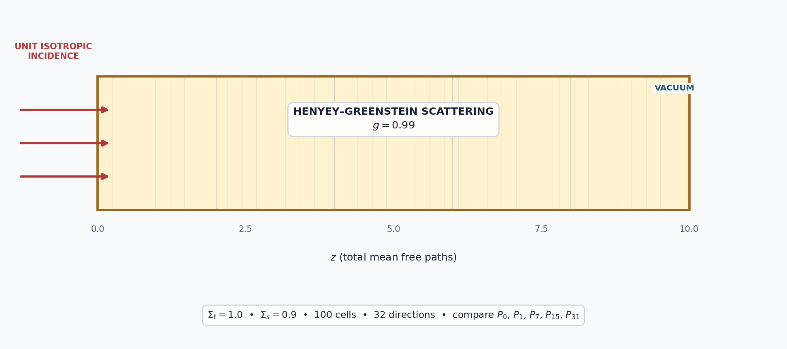
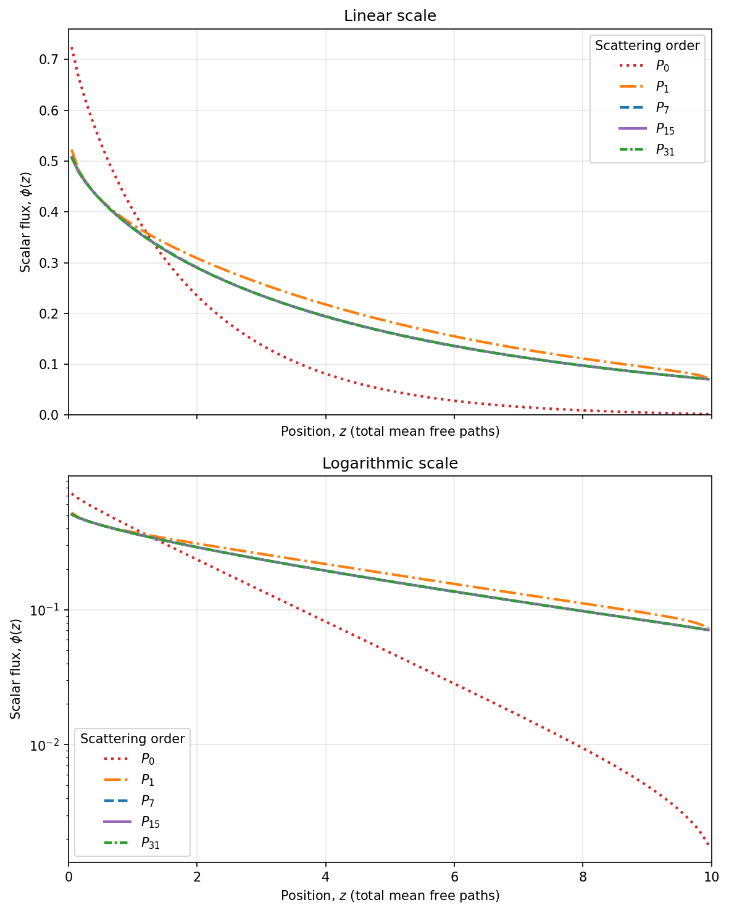

5.1.4. Strongly Forward-Peaked Scattering

This tutorial measures how scattering order changes the scalar flux in a one-group slab with a Henyey–Greenstein asymmetry factor of \(g=0.99\). We solve with \(P_0\), \(P_1\), \(P_7\), \(P_{15}\), and \(P_{31}\) scattering and compare every result with the highest computed order.
[ ]:
from pathlib import Path
import matplotlib
matplotlib.use("Agg")
import matplotlib.pyplot as plt
from mpi4py import MPI
import numpy as np
from pyopensn.aquad import GLProductQuadrature1DSlab
from pyopensn.context import Finalize, UseColor
from pyopensn.fieldfunc import FieldFunctionInterpolationLine
from pyopensn.math import Vector3
from pyopensn.mesh import OrthogonalMeshGenerator
from pyopensn.solver import DiscreteOrdinatesProblem, SteadyStateSourceSolver
from pyopensn.xs import MultiGroupXS
UseColor(False)
rank = MPI.COMM_WORLD.rank
5.1.4.1. Define the test case
The Legendre moments of the Henyey–Greenstein kernel are \(f_\ell=g^\ell\). At \(g=0.99\) they decay slowly; the first omitted moment after a \(P_{31}\) expansion is still \(g^{32}\approx0.725\).
Parameter |
Value |
|---|---|
Slab |
\(0\leq z\leq10\) total mean free paths |
\(\Sigma_t\) |
1.0 |
\(\Sigma_s\) |
0.9 |
\(g\) |
0.99 |
Mesh |
100 cells |
Quadrature |
32 directions |
Left boundary |
Unit isotropic incident flux |
Right boundary |
Vacuum |
The transport cross section is \(\Sigma_{tr}=\Sigma_t-g\Sigma_s=0.109\), so the slab is about 1.09 transport mean free paths thick.
[ ]:
sigma_t = 1.0
sigma_s = 0.9
g_hg = 0.99
maximum_order = 31
slab_length = 10.0
num_cells = 100
scattering_orders = [0, 1, 7, 15, 31]
xs_filename = Path("forward_peaked_hg099.xs")
if rank == 0:
with xs_filename.open("w") as stream:
stream.write("NUM_GROUPS 1\n")
stream.write(f"NUM_MOMENTS {maximum_order + 1}\n\n")
stream.write("SIGMA_T_BEGIN\n")
stream.write(f"0 {sigma_t}\n")
stream.write("SIGMA_T_END\n\n")
stream.write("TRANSFER_MOMENTS_BEGIN\n")
for ell in range(maximum_order + 1):
moment = sigma_s * g_hg**ell
stream.write(f"M_GFROM_GTO_VAL {ell} 0 0 {moment:.10f}\n")
stream.write("TRANSFER_MOMENTS_END\n")
MPI.COMM_WORLD.Barrier()
cell_width = slab_length / num_cells
nodes = [i * cell_width for i in range(num_cells + 1)]
grid = OrthogonalMeshGenerator(node_sets=[nodes]).Execute()
grid.SetUniformBlockID(0)
5.1.4.2. Solve and compare
The \(P_{31}\) result is the highest-order result in this exercise, so we use it as an internal reference. It is not an exact solution. For each lower order, we report
and
The first metric measures the overall profile difference; the second captures the largest local difference on a scale set by the peak reference flux.
[ ]:
flux_results = {}
csv_files = []
for order in scattering_orders:
quadrature = GLProductQuadrature1DSlab(
n_polar=32, scattering_order=order
)
cross_sections = MultiGroupXS()
cross_sections.LoadFromOpenSn(str(xs_filename))
problem = DiscreteOrdinatesProblem(
mesh=grid,
num_groups=1,
groupsets=[{
"groups_from_to": (0, 0),
"angular_quadrature": quadrature,
"inner_linear_method": "petsc_gmres",
"l_abs_tol": 1.0e-8,
"l_max_its": 300,
"gmres_restart_interval": 30,
}],
xs_map=[{"block_ids": [0], "xs": cross_sections}],
boundary_conditions=[
{"name": "zmin", "type": "isotropic", "group_strength": [1.0]},
],
)
solver = SteadyStateSourceSolver(problem=problem)
solver.Initialize()
solver.Execute()
scalar_flux = problem.GetScalarFluxFieldFunction(only_scalar_flux=False)[0][0]
line = FieldFunctionInterpolationLine()
line.SetInitialPoint(Vector3(0.0, 0.0, 0.05))
line.SetFinalPoint(Vector3(0.0, 0.0, slab_length - 0.05))
line.SetNumberOfPoints(100)
line.AddFieldFunction(scalar_flux)
line.Execute()
csv_base = f"flux_g099_P{order}"
line.ExportToCSV(csv_base)
if rank == 0:
csv_file = next(Path.cwd().glob(f"{csv_base}_*.csv"))
csv_files.append(csv_file)
data = np.genfromtxt(csv_file, delimiter=",", skip_header=1)
index = np.argsort(data[:, 2])
flux_results[order] = (data[index, 2], data[index, 3])
if rank == 0:
reference_order = scattering_orders[-1]
reference_z, reference_flux = flux_results[reference_order]
comparison_metrics = {}
for order in scattering_orders:
z, flux = flux_results[order]
if not np.allclose(z, reference_z, rtol=0.0, atol=1.0e-12):
raise RuntimeError("Line-interpolation points do not match.")
difference = flux - reference_flux
relative_l2 = np.linalg.norm(difference) / np.linalg.norm(reference_flux)
normalized_max = np.max(np.abs(difference)) / np.max(np.abs(reference_flux))
comparison_metrics[order] = (relative_l2, normalized_max)
print(f"{'Order':<10} {'Relative L2':>18} {'Normalized max':>18}")
print("-" * 48)
for order, (relative_l2, normalized_max) in comparison_metrics.items():
print(f"P{order:<9d} {relative_l2:>18.6e} {normalized_max:>18.6e}")
print(f"P{order}_RELATIVE_L2_DIFFERENCE={relative_l2:.12e}")
print(f"P{order}_NORMALIZED_MAX_DIFFERENCE={normalized_max:.12e}")
print(f"number of scattering orders tested = {len(scattering_orders)}")
5.1.4.3. Plot the profiles
The linear panel emphasizes differences near the incident boundary, while the logarithmic panel makes differences in the low-flux tail easier to see. The documentation uses the committed image below. Uncomment to regenerate it.
[ ]:
if rank == 0:
labels = {0: "$P_0$", 1: "$P_1$", 7: "$P_7$", 15: "$P_{15}$", 31: "$P_{31}$"}
colors = {0: "tab:red", 1: "tab:orange", 7: "tab:blue", 15: "tab:purple", 31: "tab:green"}
line_styles = {0: ":", 1: "-.", 7: "--", 15: "-", 31: (0, (3, 1, 1, 1))}
fig, axes = plt.subplots(2, 1, figsize=(8, 10), sharex=True)
for axis, logarithmic in zip(axes, (False, True)):
for order in scattering_orders:
z, flux = flux_results[order]
if logarithmic:
axis.semilogy(
z, np.where(flux > 0, flux, np.nan),
color=colors[order], linestyle=line_styles[order],
linewidth=2, label=labels[order],
)
else:
axis.plot(
z, flux, color=colors[order],
linestyle=line_styles[order], linewidth=2,
label=labels[order],
)
axis.set_xlabel("Position, $z$ (total mean free paths)")
axis.set_xlim(0.0, slab_length)
axis.grid(alpha=0.3)
axis.legend(title="Scattering order")
axes[0].set_ylabel(r"Scalar flux, $\phi(z)$")
axes[0].set_title("Linear scale")
axes[0].set_ylim(bottom=0.0)
axes[1].set_ylabel(r"Scalar flux, $\phi(z)$")
axes[1].set_title("Logarithmic scale")
fig.tight_layout()
# fig.savefig("images/forward_peaked_flux_g099.png", dpi=150, bbox_inches="tight")
plt.close(fig)
5.1.4.4. Results

Order |
\(E_2\) |
\(E_\infty\) |
|---|---|---|
\(P_0\) |
0.4303 |
0.4282 |
\(P_1\) |
0.07622 |
0.04654 |
\(P_7\) |
0.002888 |
0.005626 |
\(P_{15}\) |
0.001432 |
0.004834 |
\(P_{31}\) |
0 |
0 |
The curves approach the \(P_{31}\) reference as the scattering order increases. The metrics quantify differences that become difficult to distinguish visually above \(P_7\).
[ ]:
if rank == 0:
xs_filename.unlink(missing_ok=True)
for csv_file in csv_files:
csv_file.unlink(missing_ok=True)
5.1.4.5. Takeaway
Slow decay of the scattering moments signals that this is a demanding angular problem, but the quantity of interest must still be tested directly. Here the two reported metrics show how the scalar-flux profile changes with scattering order.
Because \(P_{31}\) is only the highest order used here, agreement with it does not prove convergence to the exact Henyey–Greenstein solution. For production calculations, repeat the comparison with higher scattering orders and finer angular quadratures until the required response is stable.
5.1.4.6. Finalize (for Jupyter Notebook only)
In script mode, PyOpenSn handles finalization automatically. In a Jupyter kernel, finalize OpenSn before MPI.
[ ]:
if "opensn_console" not in globals():
from IPython import get_ipython
if get_ipython() is not None:
Finalize()
MPI.Finalize()